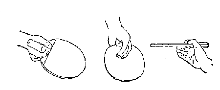
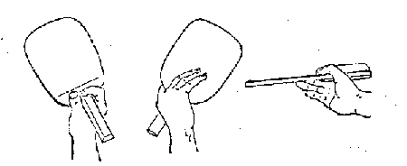
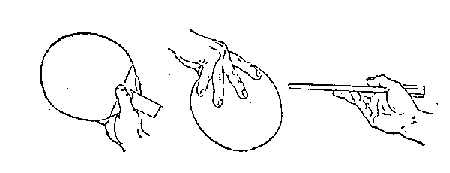
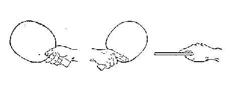
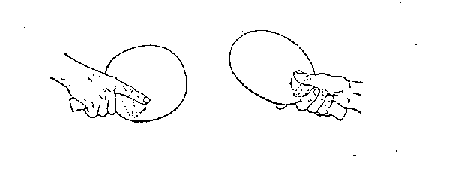
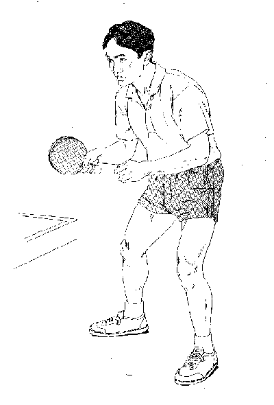
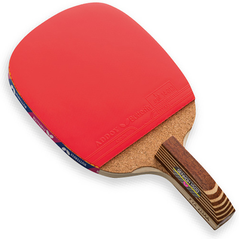
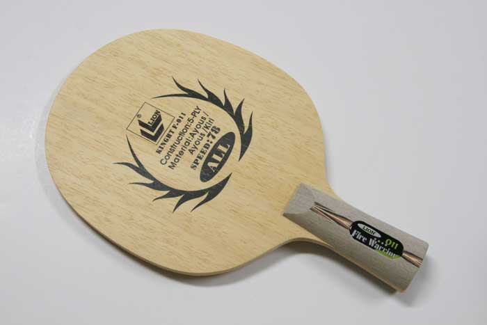
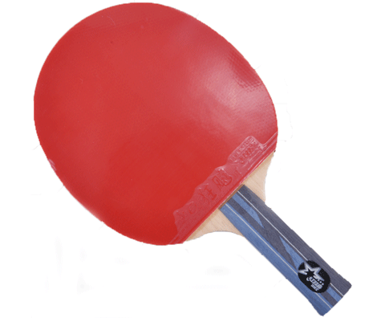

桌球歷史
桌球由網球（tennis）發展而來。它起源於19世紀末的英國。歐洲人熱愛網球運動，但因為受到場地和天氣的限制，他們將網球運動搬到室內，以餐桌作為賽場，慢慢發展出桌球運動。也有的說是1890年幾名在印度的海軍軍官發覺在一張不大的台子上玩網球頗為刺激。後來改用空心的小皮球代替彈性不大的實心球，並用木板代替了網拍。最初稱為「桌面網球」（table tennis），也有叫「室內網球」（Indoor tennis）的。一位美國製造商以桌球撞擊時所發出的聲音創造出ping-pong作為他製造的「桌球」專利註冊商標。後來逐漸為桌球的正式名稱。
20世紀初，桌球運動在歐洲和亞洲蓬勃開展起來。1926年，在德國柏林舉行了國際桌球邀請賽，同時成立了國際桌球聯合會。第一屆世桌賽譜寫了桌球早期運動的歷史新篇章，為今後的世界錦標賽奠定了基礎。從1926年至1939年，世界桌球錦標賽每年都舉行一次。從2003年第47屆世桌賽開始，國際桌總決定將把單項與團體比賽分開進行。
多年的發展也使桌球的球拍、比賽用球和規則發生了很大的變化。最初的球拍是塊略經加工的木板，後來有人在球拍上貼一層羊皮。再後來，歐洲人把帶有膠粒的橡皮貼在球拍上。在20世紀50年代初，日本人又發明了貼有厚海棉的球拍。
桌球運動於1988年夏季奧運會被首次列為奧運會正式比賽項目。
握拍方法
[直拍握拍法]
一.快攻型握拍法:
握拍法如握鋼筆寫字一樣，以食指第二指節和姆指第一指節在拍柄的前面構成一個開口鉗型，兩指尖距離1-2公分，拍柄貼住虎口，拍後三指自然彎曲貼于拍三分之一的上端。

二.弧圈型握拍法:
握法好像快攻型，但姆指緊貼拍柄左側，食指扣住拍形成一個環狀緊握拍柄，拍後三指自然彎曲頂住拍的中部。

三.削球型握拍法:
姆指彎曲緊貼拍柄左側用力下壓，其餘四指自然分托拍後面。正手削球時，盡量將球拍後仰以減少來球衝力，反手削球時，拍後面四指要靈活的把球拍轉動兜起，使拍柄向下。反攻時握法如快攻型握拍法，要迅速將食指移到拍前。

[橫拍握拍法]
一.橫拍握拍法:
其握法如同人們見面時握手一樣(故又稱為握手式握拍法)，中指、無名指、小指握拍柄，虎口貼住拍肩，姆指略彎曲緊捏拍或斜伸拍面，食指斜伸在拍的另面。

二.其他握法:
還有另一種握法是正手攻球時食指向上移動，反手攻球時姆指向上移動。

站姿
1. 雙眼注視球體，離桌緣約1公尺距離。
2. 上身微向前傾，雙膝輕彎曲重心在趾尖。
3. 手腕放鬆手輕握球拍。
4. 雙足張開稍大於肩寬，左足(右手握拍者)稍向前讓身體與桌緣約成40度角。
5. 準備姿勢時全身一定要放鬆，肩部、肘部、膝部等都不要過度的用力，且雙手肘部
要保持直角狀態，並將 球拍置於腹部與胸部之間，以備揮拍擊打來球。

球拍（racket/bat）
材質規定：
根據國際桌球聯盟（ITTF）的規定，球拍組成中，至少要85％是天然木材，可用纖維材料或壓縮紙作為強化層，但強化層的厚度應小於球拍總厚度的7.5％或0.35毫米。
類型(依結構區分)：
單板：整支球拍是由單一層天然木材，加工製成，常見木材包括檜木、柏木。單板球拍對於木紋的疏密、角度與均勻度有較高要求，會對擊球時的力量傳遞與手感有極大影響。
夾板：球拍是由多層木材或強化層組成，一般來說，夾板會使用纖維方向不同的木材夾層加以組合製成，根據木材夾層的層次多寡，又可分為三夾、五夾、七夾甚至九夾，且夾層由內而外可分為芯材、力材與面材。
類型(依握法區分)：
直拍(penhold grip)：又可分為日本式直板（日直）及中國式直板（中直）兩大類

1.日本式直板：俗稱日直，在臺灣、日本、韓國及朝鮮等地區業餘球友之間較為流行的一種工具，在結構選才上多為單一材質（單板），以檜木（其中又有日本檜木、美洲檜木及台灣檜木之分）居多，中國製拍廠世奧得（SWORD）亦曾製作阿尤斯木之單板日直，惟擊球手感與檜木差異大，較難為習慣單板檜木之使用者所接受，故市場銷售量不佳。除了單板之外，市場上亦有多層複合板（強化層有編織碳纖維、芳碳纖維、軟碳、尼龍碳纖維等）之產品，近幾年日本蝴蝶牌（BUTTERFLY）亦有推出以韓國選手柳承敏命名之尼龍碳維纖日本式直板。以拍面形狀來分，又有方形（或稱角形）、圓形（或稱丸形）及方圓形（或稱角丸形）之直板，主要區別是在於擊球重心點不同，方形適合中、遠檯抽球進攻，圓形適合近檯小球技術，而方圓形介於兩者之間。除了這3種形狀外，市場上亦有可貼兩面膠皮以倒拍進攻為主之陰陽板，惟此類產品甚為少見，在打法上亦較難學習與掌握。

2.中國式直板：俗稱中直（CS），外觀上幾乎與橫板一樣，但通常拍形較長（約151mm*160mm），握柄處較短，兩面均可貼皮，以反面膠皮擊球即所謂「直拍橫打」，在國際桌壇中國王皓（已退役）、許昕、香港黃鎮廷等人為代表的打法。在反手打法上，可採用部分推擋部分直拍橫打（如中國已退役之馬琳），或是全直拍橫打（如中國王皓）的打法。中國式直板在中國業餘球界最為盛行，其他如台灣或香港地區業餘球界亦有人使用。中國式直板在結構選材上幾乎清一色為夾板，少數品牌如DARKER、銀河曾推出單一檜木材質，惟因厚度太厚，市場接受度不高。
橫拍(shakehand grip)：又稱刀板、負手板。

膠皮（rubber）
尺寸規定:
若是無海綿膠皮，膠皮和黏著劑的總厚度不能超過2毫米，若是有海綿膠皮，膠皮和黏著劑的總厚度不能超過4毫米。
膠皮必須是連續、平整且厚度均勻的。
球板兩面的膠皮必須是紅色和黑色，不能同色。
類型:
反膠：膠皮平坦的一面朝外，以接觸球體。由於膠皮能與球接觸時，能透過形變增加與球的接觸面積，因此球手可以容易施力產生強烈旋轉。
正膠：俗稱短顆粒，又根據膠質是否硫化的不同，分為生膠與熟膠，生膠的短顆粒通常顆粒大小較大，又稱中顆粒。
長膠：俗稱長顆粒。
防弧：俗稱Anti，無摩擦膠面。
規則
發球開始時，球自然地置於非持拍手的手掌上，手掌平坦張開，保持靜止。
發球時，發球員必須以非持拍手將球幾乎垂直地向上拋起，且不得使球旋轉，並使球在離開非持拍手的手掌之後上升至少16公分。球離開手掌到被擊出前不能碰觸任何物體，亦不得以服裝或身體任意部位做出遮擋行為，使接發球員看不見完整的發球過程，若有則判為犯規。
當球從拋起的最高點下降時，發球員才可擊球，之後使球首先觸及發球方台區，然後越過或繞過球網裝置，再觸及接發球方台區。若球在發球過程中觸碰到球網裝置，必須重新發球。雙打中，球應先後觸及發球方和接發球方的右半區。
從發球開始，到球被擊出，球要始終在台面以上和發球員的端線以外以防桌內發球犯規，而且不能被發球員或其雙打同伴的身體或衣服任何部分擋住，否則亦視同犯規。
在運動員發球時，球與球拍接觸的一瞬間，球與網柱連線所形成的虛擬三角形之內和一定高度的上方不能有任何遮擋物，並且其中一名裁判員要能看清運動員的擊球點。
擊球
對方發球或回擊後，本方球員應予擊球使球直接觸及對方檯區或觸及球網組合後，再觸及對方檯區。
失分
1.未能合法發球或未能合法還擊。
2.擊球後，該球沒有觸及對方台區而離開球檯。
3.阻擋或同一方連擊；
4.用不符合規則條款的拍面擊球；
5.運動員或運動員穿戴的任何物件使球檯移動；
6.運動員穿戴的任何物件觸及球網裝置；
7.非執拍手觸及比賽台面；
8.雙打運動員擊球次序錯誤；
9.執行輪換發球法時，發球一方被接發球一方或其雙打同伴，包括接發球一擊，完成了13次合法還擊。
發球
[基礎發球法練習]
1. 長球(快速球):
發長球時其擊球時間在球快落到球檯時(越低則球越可快速前衝)，且所擊之落點近球檯邊緣，將球盡快速往前衝擊，其力道恰好讓球前衝到對面球檯端緣。
2. 短球(慢速球):
發短球時其擊球時間在球快落到球檯上10~20公分處(越高之擊球點落點要越近網前，且力道要輕)，輕觸球前下緣，讓球落於近網前檯面，其力道恰使球彈過球網之高度落於對面網前，最佳的力道是恰好在對方球檯彈2下，且第2下是落於桌面之邊緣，讓對手判斷球是否出檯產生錯亂。